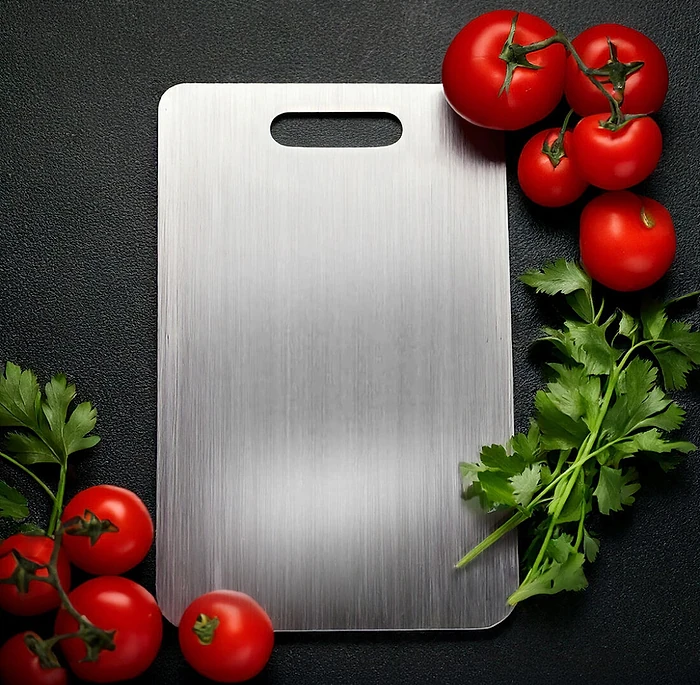
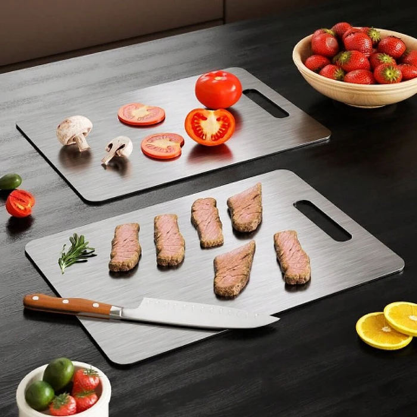

Was ist Katori und wie funktioniert es?
Katori ist ein Schneidebrett aus Titan. Laut der offiziellen Website misst es 29 x 20 cm, ist beidseitig nutzbar und hat eine ausgestanzte Griffmulde an einer Schmalseite. Auf den Produktbildern sieht man eine glatte, silbern gebürstete Metallplatte, die deutlich dünner ist als ein klassisches Holz- oder Kunststoffbrett.
Die Idee dahinter beschreibt der Hersteller so: Titan ist nicht porös, deshalb sollen sich darin weder Bakterien noch Gerüche oder Lebensmittelreste festsetzen. Anders als Kunststoff soll das Brett beim Schneiden keine Mikroplastikpartikel abgeben, und anders als Glas oder Stein soll es Messerklingen schonen.
Die Website nennt außerdem Hitzebeständigkeit, Kratz- und Verformungsfestigkeit und eine „lebenslange Haltbarkeit“. Wegen der zwei Seiten soll man rohes Fleisch und Gemüse getrennt bearbeiten können. Als Einsatzbereiche werden die tägliche Küche, Grillen und Camping genannt.
Bei einigen Aussagen ist Vorsicht angebracht. Die Seite spricht an einer Stelle von „100% Titan“, an anderer Stelle von „99.89% reines Titan“ und zeigt dazu ein Prüfbericht-Bild mit SGS-Logo, ohne den Bericht selbst lesbar zu verlinken. Auch „Deutschlands beliebtestes Titan-Schneidebrett“ und „bestes Titan-Schneidebrett des Jahres 2026“ werden ohne Quelle genannt.
Dass Titan Messer besonders schont, ist umstritten. Titan ist weicher als Glas oder Keramik, aber deutlich härter als Holz oder Kunststoff, die unter Köchen als die klingenschonendsten Unterlagen gelten.
Einordnung: Ein Metallbrett ist leicht abzuwaschen, nimmt kaum Gerüche an und ist robust. Wer allerdings viel mit scharfen japanischen Messern arbeitet, sollte die Kanten nach einigen Wochen prüfen. Zudem rutschen Lebensmittel auf glattem Metall leichter als auf Holz, und das Schneiden ist lauter.
Wer das berücksichtigt, kann Katori als pflegeleichte Unterlage für den Alltag, für Grillabende und für unterwegs betrachten, ohne Wunder zu erwarten. Die Ergebnisse hängen stark von den eigenen Messern und Gewohnheiten ab.
Katori Funktionen
Laut der offiziellen Website bietet Katori:
Titanoberfläche: porenfrei, nach Herstellerangabe aus reinem Titan.
Doppelseitiges Design: eine Seite für rohe, eine für gekochte Lebensmittel.
Kratz- und verformungsfest: soll sich auch bei täglichem Gebrauch nicht verziehen.
Hitzebeständig: heiße Töpfe und Pfannen sollen direkt abgestellt werden können.
Geruchs- und fleckenabweisend: Zwiebeln oder Knoblauch sollen keine Spuren hinterlassen.
BPA-frei: ohne Kunststoff und ohne Beschichtung, so die Website.
Auf den Produktbildern sind das Brett mit Tomaten und Kräutern, zwei Bretter mit Pilzen, Tomaten und Fleisch, ein Bild in der Spülmaschine und eine Vergleichstafel gegen Holz und Kunststoff zu sehen. Konkurrenzprodukte werden dabei nicht namentlich genannt.
Was fehlt: das Gewicht, die genaue Dicke, die Titanlegierung und eine lesbare Fassung des erwähnten Prüfberichts. Widersprüchlich ist die Pflege. Die Vergleichstabelle nennt das Brett „spülmaschinenfest“, die häufig gestellten Fragen empfehlen dagegen warmes Wasser, milde Seife und sofortiges Abtrocknen und raten von Scheuermitteln ab, weil diese die Oberfläche beschädigen können. Auch „kein Einölen oder Reinigen erforderlich“ passt nicht ganz zum Hinweis, dass regelmäßige Reinigung Aussehen und Hygiene erhält.
Katori Anwendung
Das Brett wird wie jede Schneideunterlage benutzt: flach auf die Arbeitsfläche legen, schneiden und danach abspülen. Laut den häufig gestellten Fragen waschen Sie es nach jedem Gebrauch mit warmem Wasser und milder Seife und trocknen es sofort mit einem weichen Tuch, damit keine Wasserflecken entstehen. Scheuermilch und kratzende Schwämme sollten Sie vermeiden.
Für die Trennung von Lebensmitteln empfiehlt die Website, eine Seite für rohes Fleisch und Fisch und die andere für Gemüse, Brot oder Gekochtes zu verwenden. Markieren Sie sich am besten, welche Seite welche ist, denn beide sehen gleich aus.
Allgemeine Hinweise: Legen Sie ein feuchtes Tuch oder eine rutschfeste Matte unter das Brett, weil glattes Metall auf Stein oder Laminat leicht verrutscht. Schneiden Sie mit ziehender statt hackender Bewegung, um die Klinge zu schonen. Rohes Geflügel sollte direkt danach gründlich gereinigt werden, auch auf einer porenfreien Oberfläche.
Die Website erlaubt das Abstellen heißer Töpfe. Bedenken Sie aber, dass Metall Wärme schnell leitet: Das Brett kann danach heiß sein, und die Arbeitsfläche darunter ist nicht automatisch geschützt. Beim Camping lässt es sich gut transportieren; packen Sie es mit einer Hülle ein, damit die Kanten nichts zerkratzen.
Katori – Rückerstattung
Laut der offiziellen Website gilt eine 30-Tage-Geld-zurück-Garantie. Nach der Rückgaberichtlinie können Produkte innerhalb von 30 Tagen nach Erhalt der Bestellung gegen Rückerstattung oder Umtausch zurückgesendet werden, wenn sie beschädigt oder defekt sind, wenn Sie einen falschen Artikel erhalten haben oder wenn Sie es sich anders überlegt haben.
Bei einer Rückgabe wegen Meinungsänderung muss das Brett unbenutzt, unbeschädigt und in der Originalverpackung sein, und alles mitgelieferte Zubehör muss beiliegen. Ein bereits benutztes Brett mit Gebrauchsspuren fällt damit in der Praxis heraus. Bei beschädigter Ware bittet der Verkäufer um Fotos des Schadens.
Der Ablauf ist genau geregelt: Zuerst wenden Sie sich mit Name, E-Mail-Adresse, Bestellnummer und Grund an den Kundendienst. Die Prüfung dauert laut Richtlinie meist bis zu drei Werktage. Wird die Rückgabe genehmigt, erhalten Sie ein Rücksendeformular (RMA) und die Rücksendeadresse. Pakete ohne Genehmigung oder an die Firmenadresse werden nicht bearbeitet, und die Sendungsnummer soll per E-Mail mitgeteilt werden.
Die Kosten der Rücksendung trägt laut Richtlinie der Kunde, die ursprünglichen Versandkosten werden nicht erstattet. Nach Eingang kann die Prüfung bis zu sieben Tage dauern, danach geht das Geld auf das ursprüngliche Zahlungsmittel zurück. Für Verbraucher in der EU gilt zusätzlich das gesetzliche Widerrufsrecht von 14 Tagen. Bewahren Sie Bestellbestätigung, Formular und Sendungsnummer auf, bis die Erstattung eingegangen ist.
Katori Kundenbewertungen
-
SaraVerifizierter Kauf
„Ich liebe dieses Schneidebrett! Es ist so viel einfacher zu reinigen als mein altes Holzbrett – kein Schrubben mehr, um die Messerspuren zu entfernen. Nach 6 Monaten intensiver Nutzung sieht es immer noch brandneu aus.“
-
EvaVerifizierter Kauf
„Ich habe mich immer davor gefürchtet, Gemüse zu schneiden, weil meine Messer auf meinen alten Brettern so schnell stumpf wurden. Mit dem Katori Schneidebrett bleiben meine Messer scharf und ich muss nicht ständig nach dem Messerschärfer greifen.“
-
LindaVerifizierter Kauf
„Ich habe es immer gehasst, dass der Geruch von Lebensmitteln auf meinen Holzbrettern verweilte. Zwiebeln, Knoblauch, alles! Aber Katori nimmt keine Gerüche auf. […] es sieht immer aus wie neu.“
Katori – Wo kaufen?
Katori wird über die offizielle Bestellseite get-katori.com verkauft, die eine eigene deutsche Version hat. Dort finden Sie Funktionen, Vergleich, Bewertungen, häufig gestellte Fragen und Kontakt, und Sie wählen direkt die gewünschte Anzahl an Brettern.
Schneidebretter aus Titan oder Edelstahl werden inzwischen von vielen Marken angeboten, auch im Handel und auf großen Marktplätzen, oft in sehr ähnlicher Optik. Bei Angeboten unter dem Namen Katori auf anderen Plattformen ist nicht sicher, ob es sich um dasselbe Produkt handelt, und die 30-Tage-Garantie des Verkäufers gilt dort in der Regel nicht. Vergleichen Sie im Zweifel Maße, Verpackung und Verkäuferangaben.
Die Bestellseite arbeitet mit Hinweisen auf ein zeitlich begrenztes Angebot, knappen Vorrat und Aussagen wie „Deutschlands #1 Titan-Schneidebrett“. Lassen Sie sich davon nicht drängen. Prüfen Sie vor dem Abschluss die Bestellübersicht, die Anzahl, das Lieferland und die Rückgabebedingungen, und achten Sie darauf, dass Sie sich wirklich auf get-katori.com befinden. Verkäufer ist laut Impressum die Movira LLC mit Sitz in Delaware (USA); Rücksendungen laufen über eine Adresse in Bremen.
Um sicherzugehen, dass Sie das Originalprodukt erhalten, besuchen die meisten Nutzer die offizielle Website.
Ist Katori Betrug?
Nach den verfügbaren Informationen gibt es keinen Hinweis darauf, dass Katori Betrug ist. Das Produkt wird über eine eigene Bestellseite mit deutscher Version, Maßangaben, Kundenbewertungen, häufig gestellten Fragen, Rückgaberichtlinie, Versandinformationen und Impressum verkauft.
Positiv sind die 30-Tage-Geld-zurück-Garantie, die klare Größenangabe, die einfache Reinigung einer glatten Metalloberfläche und die Rücksendeadresse in Deutschland.
Es gibt aber Punkte, die Aufmerksamkeit verdienen. Die Reinheit des Titans wird mal mit 100 %, mal mit 99,89 % angegeben, und der gezeigte Prüfbericht ist nicht nachlesbar. „Bestes Titan-Schneidebrett des Jahres 2026“ nennt keine Quelle, und die Zahl der Bewertungen schwankt auf derselben Seite zwischen 1000+, 1.894 und 8K+ zufriedenen Kunden. Die Pflegeangaben widersprechen sich bei der Spülmaschine. Der vorgestellte Gründer „Kaito Mason“, ein Koch der japanischen Küche, lässt sich nicht überprüfen. Und die Darstellung von Holz- und Kunststoffbrettern als gesundheitsgefährdend ist zugespitzt; gut gepflegte Bretter aus diesen Materialien werden seit Jahrzehnten problemlos genutzt.
Der Verkäufer sitzt in den USA, Rücksendungen brauchen eine vorherige Genehmigung, und ein benutztes Brett ist von der Rückgabe wegen Meinungsänderung praktisch ausgeschlossen.
Wer ein robustes, leicht zu reinigendes Brett sucht und realistische Erwartungen an die Messerschonung hat, geht bei einer Bestellung über die offizielle Website nach heutigem Stand kein besonderes Risiko ein.
Wer Produktdetails überprüfen oder die aktuelle Verfügbarkeit prüfen möchte, ist auf der offiziellen Katori-Website am sichersten aufgehoben.
